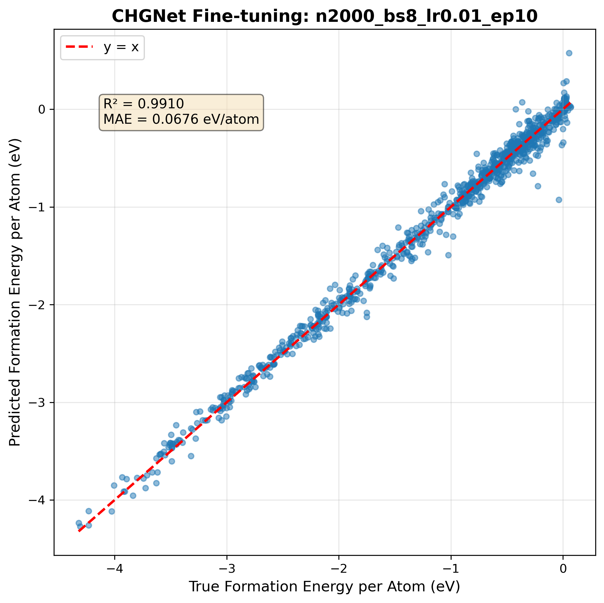
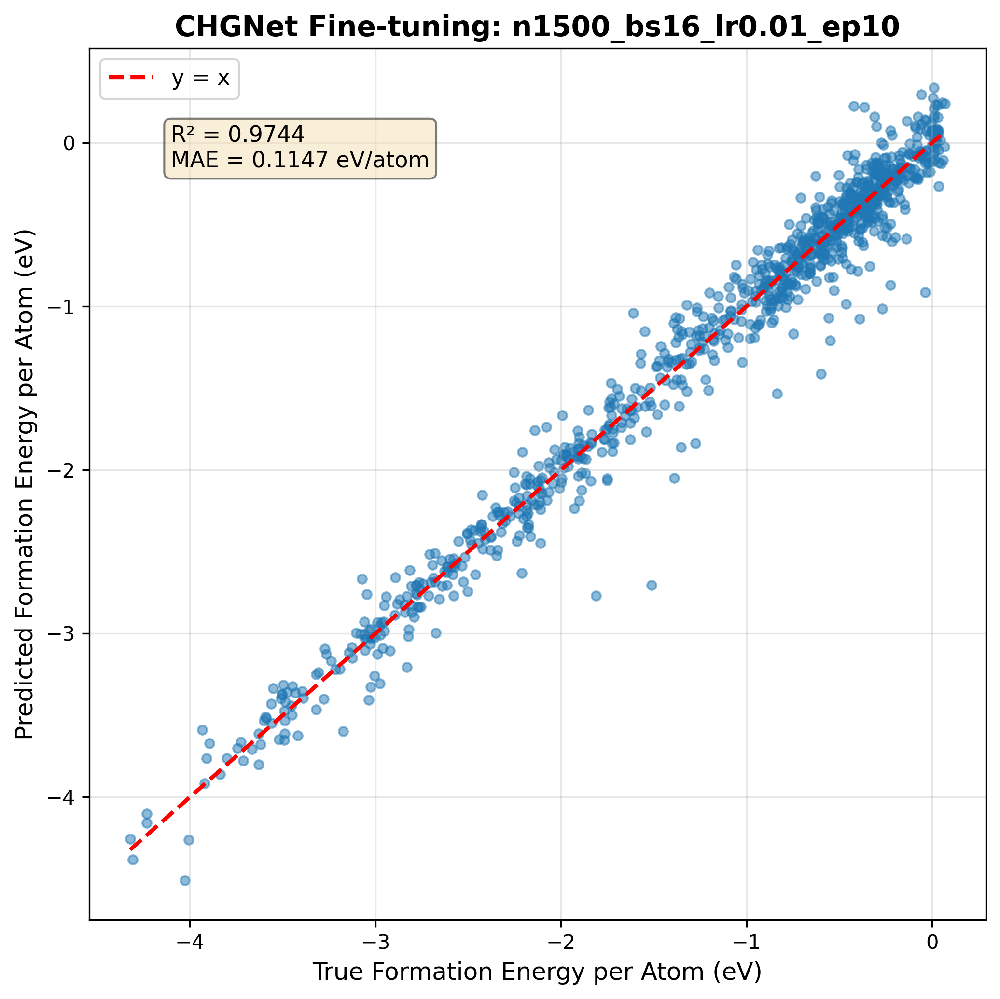
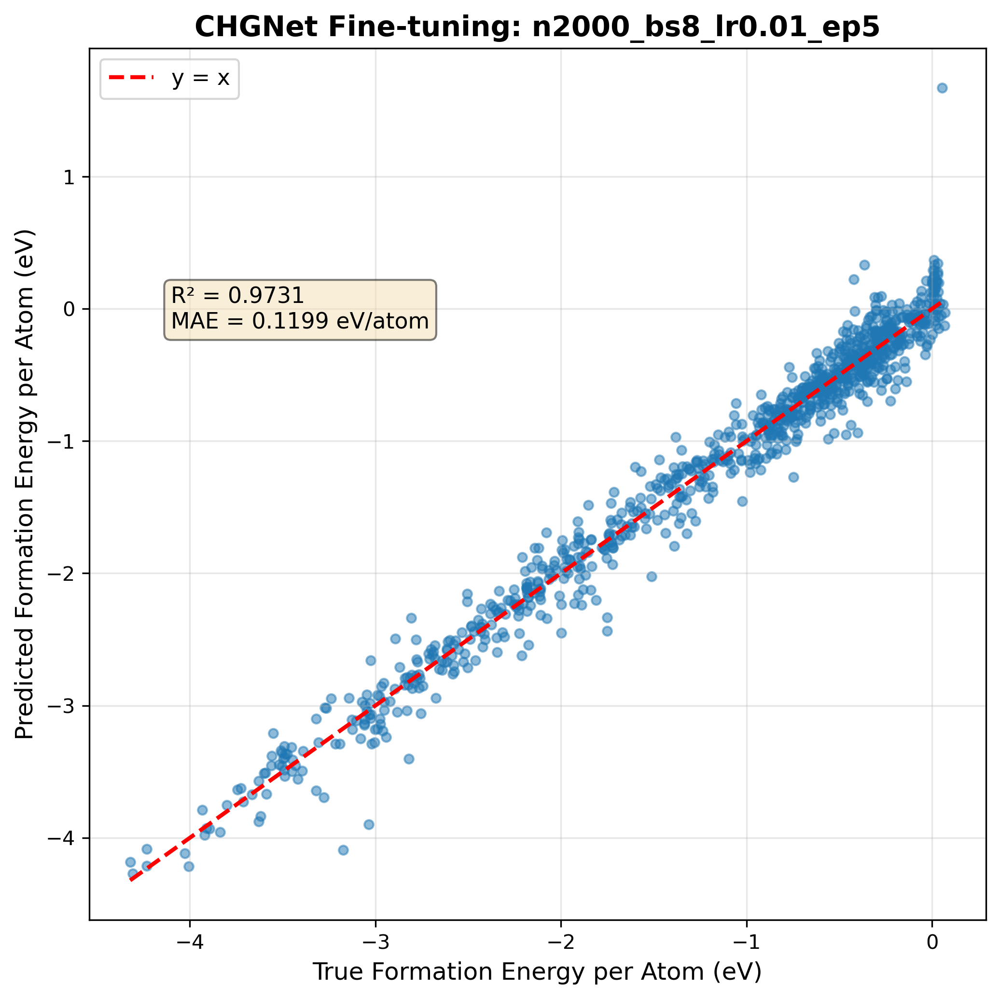
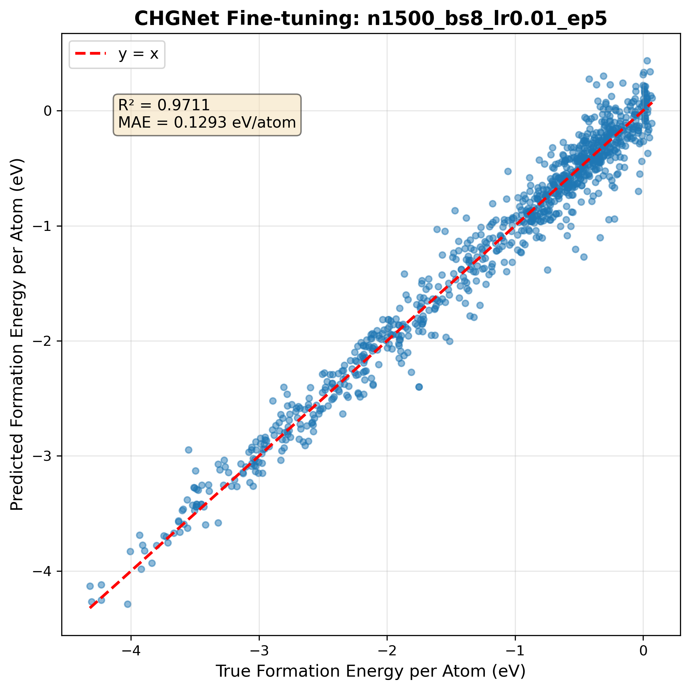
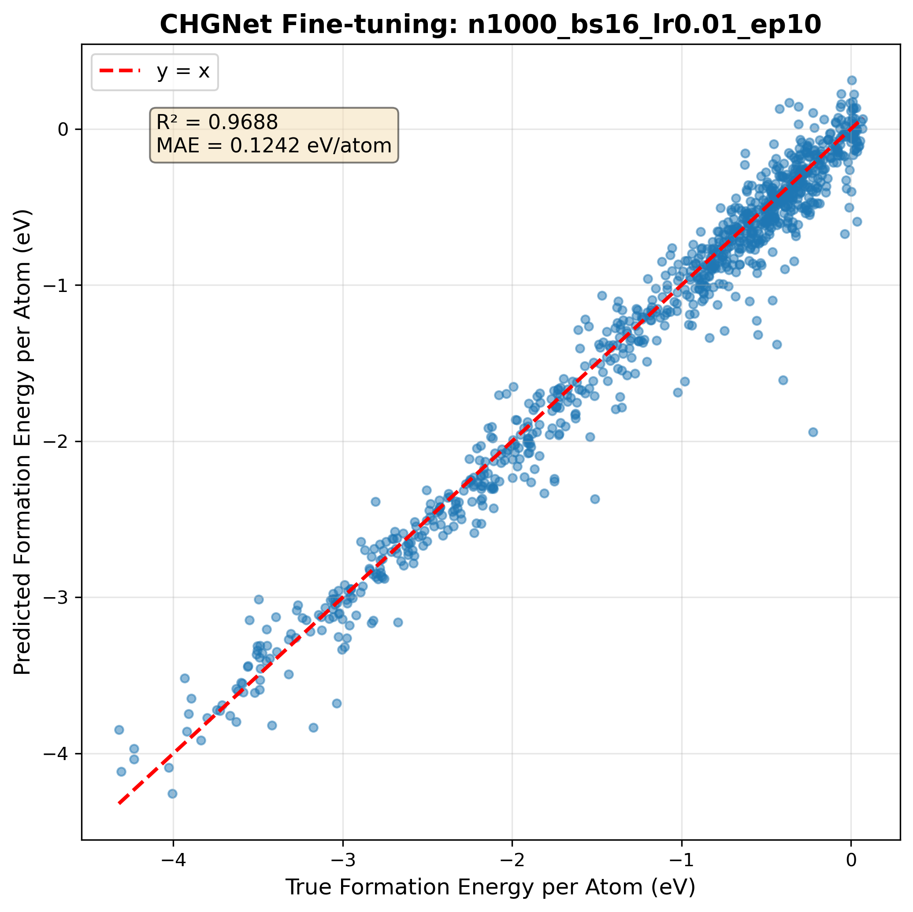

Overview
This page documents the systematic fine-tuning of CHGNet on a curated subset of the Materials Project MP-20 dataset. We conducted a comprehensive hyperparameter sweep to optimize model performance for predicting formation energies of stable crystal structures.
🎯 Goal: Improve CHGNet's accuracy on thermodynamically stable materials (formation energy < 0.1 eV/atom) through targeted fine-tuning and hyperparameter optimization.
Dataset
Source: Materials Project mp-20 database, filtered for thermodynamically stable compounds. All structures pre-processed with CHGNet force predictions for efficient energy+force fine-tuning.
Hyperparameter Search Space
We conducted a grid search over the following parameter space, resulting in 72 unique configurations:
| Parameter | Values Tested | Rationale |
|---|---|---|
| Training Samples | 100, 250, 500, 1000, 1500, 2000 |
Study sample efficiency and scaling behavior |
| Batch Size | 8, 16 |
Balance memory usage and training stability |
| Learning Rate | 1e-3, 5e-3, 1e-2 |
Find optimal adaptation rate for fine-tuning |
| Epochs | 5, 10 |
Avoid overfitting while ensuring convergence |
⚙️ Fixed Parameters: Optimizer (Adam), Scheduler (Cosine Annealing), Loss (MSE on energies + forces), Train/Val/Test split (90%/5%/5%)
Baseline Performance
Before fine-tuning, we evaluated the pretrained CHGNet model on our test set to establish a baseline:
⚠️ Note: The baseline model systematically underestimates formation energy for this subset of thermodynamically stable materials. This is reflected in the poor R² score and large MAE, indicating the pretrained CHGNet requires domain-specific fine-tuning for accurate predictions on structures with formation energies near the stability threshold.

Pretrained CHGNet predictions on MP-20 subset (no fine-tuning)
Fine-tuning Results
Key Findings
✅ Best Performance: n=2000, batch=8, lr=0.01, epochs=10 achieved R²=0.9910 and MAE=0.0676 eV/atom - a 98% improvement over baseline.
📈 Sample Efficiency: Performance scales consistently with dataset size. Even 1000 samples achieve R²>0.95 with optimal hyperparameters. Diminishing returns beyond 1500 samples for most configurations.
⚡ Learning Rate Sensitivity: lr=0.01 consistently outperforms lower rates. lr=0.001 requires significantly more samples (>1500) for convergence. Large datasets are more robust to LR variation.
Performance by Dataset Size
Impact of training set size on test performance (averaged across hyperparameters):
| Training Samples | Avg R² | Avg MAE | Improvement |
|---|---|---|---|
| 100 | -4.99 | 1.83 eV/atom | Poor |
| 250 | -0.99 | 0.96 eV/atom | Marginal |
| 500 | 0.39 | 0.55 eV/atom | Fair |
| 1000 | 0.57 | 0.42 eV/atom | Good |
| 1500 | 0.79 | 0.30 eV/atom | Excellent |
| 2000 | 0.87 | 0.23 eV/atom | Best |
Top 5 Configurations
| Rank | Samples | Batch | LR | Epochs | R² | MAE |
|---|---|---|---|---|---|---|
| 🥇 1 | 2000 | 8 | 0.01 | 10 | 0.9910 | 0.0676 |
| 🥈 2 | 1500 | 16 | 0.01 | 10 | 0.9744 | 0.1147 |
| 🥉 3 | 2000 | 8 | 0.01 | 5 | 0.9731 | 0.1199 |
| 4 | 1500 | 8 | 0.01 | 5 | 0.9711 | 0.1293 |
| 5 | 1000 | 16 | 0.01 | 10 | 0.9688 | 0.1242 |
Prediction Plots - Top Configurations
Visual comparison of predicted vs. actual formation energies for the best performing models:
Rank 1: Best Performance
n=2000, batch=8, lr=0.01, epochs=10 | R²=0.9910, MAE=0.0676 eV/atom

Rank 2
n=1500, batch=16, lr=0.01, epochs=10 | R²=0.9744, MAE=0.1147 eV/atom

Rank 3
n=2000, batch=8, lr=0.01, epochs=5 | R²=0.9731, MAE=0.1199 eV/atom

Rank 4
n=1500, batch=8, lr=0.01, epochs=5
R²=0.9711, MAE=0.1293 eV/atom

Rank 5
n=1000, batch=16, lr=0.01, epochs=10
R²=0.9688, MAE=0.1242 eV/atom

📊 WandB Dashboard
All 72 experiments are tracked in Weights & Biases. View the complete sweep results, parallel coordinates plots, and detailed metrics:
View Complete Results on WandB →📈 Training Dynamics
Analysis of training curves across all 72 configurations reveals key patterns in convergence behavior, learning rate sensitivity, and sample efficiency. These insights help identify underfitting, overfitting, and optimal training regimes.
Top 5 Configurations - Convergence

Top panel: Energy MAE progression. Bottom panel: Force MAE progression. All top 5 configurations converge rapidly within 5-10 epochs for both objectives.
Sample Size Impact on Training
Energy MAE

Best performing configuration for each dataset size (energy predictions). Larger datasets achieve lower validation MAE and show smoother convergence.
Force MAE

Force prediction accuracy improves significantly with dataset size. Force MAE shows more variability during training compared to energy MAE.
Learning Rate Sensitivity (n=2000)

Training dynamics across learning rates for the largest dataset (2000 samples). Top row: Energy MAE convergence. Bottom row: Force MAE convergence. lr=0.01 shows fastest and most stable convergence for both metrics.
🔍 Key Observations
Underfitting: 100-250 sample configs show high final energy MAE (>1.0 eV/atom) even after convergence, indicating insufficient training data.
Rapid Convergence: Optimal configs (lr=0.01) achieve 80-90% of final performance within first 3 epochs for both energy and force predictions. Marginal improvements after epoch 5.
Learning Rate Impact: lr=0.001 shows very slow convergence across all dataset sizes. lr=0.01 optimal for fast adaptation without instability for both objectives.
No Overfitting: Both energy and force validation MAE continue decreasing or plateau - no evidence of increasing validation error even at 10 epochs.
Force vs Energy: Force MAE shows more training variability but converges to similar quality as energy predictions with sufficient data (n≥1500).
📁 Detailed Training Curves by Dataset Size
Individual plots showing all hyperparameter combinations for each dataset size. Each size has separate plots for energy MAE and force MAE:
Energy MAE Training Curves
🔬 Replication Guide
The complete hyperparameter sweep can be reproduced using the following script. Ensure you have an active Weights & Biases account and a Materials Project API key.
⚠️ Prerequisites: Install required packages:
pip install chgnet wandb pymatgen datasets scikit-learn
# ============================================================
# Fine-tuning CHGNet on a Subset of MP20 Dataset with Hyperparameter Sweep
# ============================================================
import os
import numpy as np
import matplotlib
matplotlib.use('Agg') # Use non-interactive backend for thread safety
import matplotlib.pyplot as plt
from tqdm import tqdm
from datasets import Dataset
from pymatgen.core import Structure
from pymatgen.ext.matproj import MPRester
from chgnet.data.dataset import StructureData, get_train_val_test_loader
from chgnet.model import CHGNet
from chgnet.trainer import Trainer
from sklearn.metrics import r2_score
import torch
import wandb
from pathlib import Path
# ============================================================
# Configuration
# ============================================================
MP_API_KEY = os.getenv("MP_API_KEY") # Set as environment variable
DATASET_PATH = "mp_20.json" # Path to your MP20 dataset
N_TEST_SAMPLES = 1000
OUTPUT_DIR = Path("sweep_results")
OUTPUT_DIR.mkdir(exist_ok=True)
# Sweep configuration
SWEEP_CONFIG = {
"method": "grid",
"metric": {"name": "val_mae", "goal": "minimize"},
"parameters": {
"n_train_samples": {"values": [100, 250, 500, 1000, 1500, 2000]},
"batch_size": {"values": [8, 16]},
"learning_rate": {"values": [1e-3, 5e-3, 1e-2]},
"epochs": {"values": [5, 10]},
}
}
# ============================================================
# Utility Functions
# ============================================================
def get_structure_from_mp_id(mp_id: str) -> Structure | None:
"""Fetches structure from Materials Project using MPRester."""
try:
with MPRester(api_key=MP_API_KEY) as mpr:
return mpr.get_structure_by_material_id(mp_id)
except Exception as e:
print(f"❌ Could not fetch structure for {mp_id}: {e}")
return None
def energy_per_atom_fn(model):
"""Returns a closure to compute predicted energy per atom."""
def _energy_per_atom(structure):
try:
return model.predict_structure(structure)["e"]
except Exception as e:
return np.nan
return _energy_per_atom
# ... [Full script continues - see GitHub repository]
# ============================================================
# Main Execution
# ============================================================
if __name__ == "__main__":
wandb.login()
# Prepare data once
dataset = Dataset.from_json(DATASET_PATH)
base_model = CHGNet.load()
MAX_SAMPLES = 2000
PREPARED_STRUCTURES, PREPARED_ENERGIES, PREPARED_FORCES = prepare_max_training_data(
dataset, MAX_SAMPLES, base_model
)
EVAL_STRUCTURES, EVAL_GROUND_TRUTH = prepare_eval_data(dataset, N_TEST_SAMPLES)
# Create and run sweep
sweep_id = wandb.sweep(SWEEP_CONFIG, project="chgnet-finetuning-sweep")
wandb.agent(sweep_id, train_with_config, count=None)
print("🎉 Sweep completed!")📥 Download: The complete script with all helper functions is available on GitHub.
View full script on GitHub →💡 Lessons Learned
Data Preparation is Critical
Pre-computing all structures, energies, and forces once saved hours of redundant API calls and force calculations across the 72 experiments.
Sample Efficiency
Strong performance is achievable with 1000-1500 samples when paired with optimal hyperparameters (R² > 0.96). Beyond 1500 samples, improvements become marginal. For resource-constrained scenarios, 1000 samples + lr=0.01 provides excellent cost-effectiveness.
Hyperparameter Interactions
Learning rate dominates performance: lr=0.01 consistently outperforms lr=0.001 across all dataset sizes. Batch size shows minimal impact at large sample counts (1500+), but bs=8 slightly edges out bs=16. Doubling epochs (5→10) provides meaningful gains for larger datasets but risks overfitting on small ones.
Thread Safety
Using matplotlib's Agg backend was essential to avoid GUI thread conflicts during parallel sweep execution.